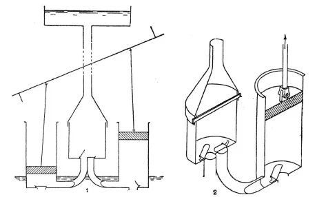
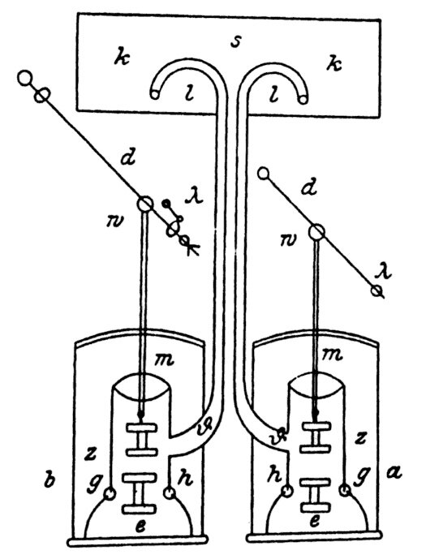
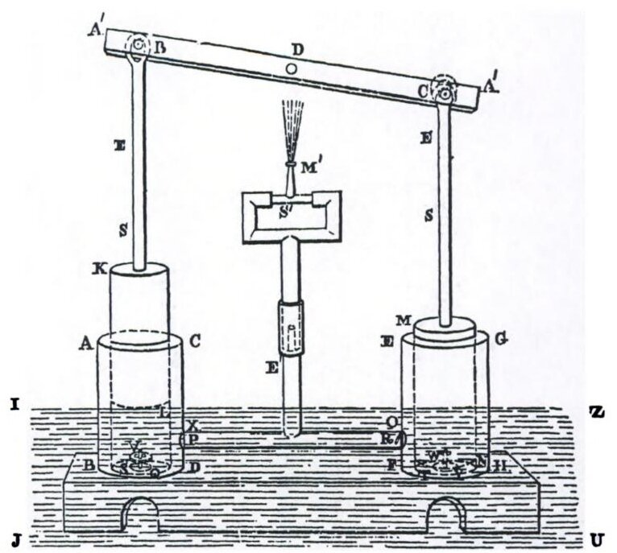
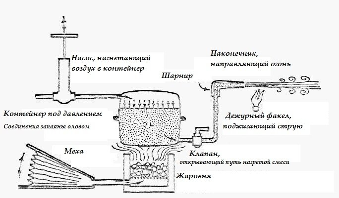
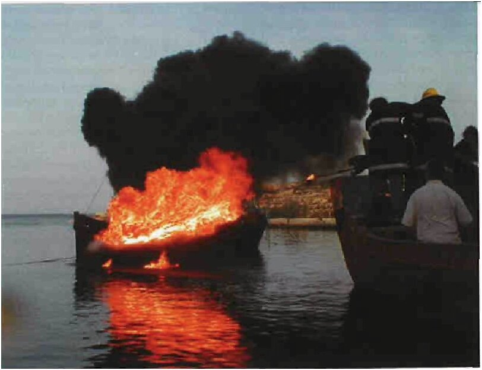

В обстоятельной книге Олесона на тему античных водоподъемных устройств приводится каталожный список 17 источников, в той или иной степени освещающих этот вопрос:
Нагнетательные насосы:
- конец III в до н.э.? Филон Византийский Pneumatica приложение 1 гл. 2
- 25-23 до н.э. Витрувий X, 7, 1-5 (Ctesibica machina)
- начало I в. н.э. Musa (sipho)
- ок. 50 г. н.э. Герон Александрийский Pneumatica I 28 (σίφων, ὄργανον)
- сер.I в. н.э. Anonymous Aetna vv 324-8 (sipo)
- 60-79 г. н.э. Плиний Старший II 65, 166 (sipho); XIX 20, 60 (organa pneumatica)
- 62-5 Сенека (sipo)
- 100-30 Аполлодор из Дамаска (σίφων)
- 109-11 Плиний младший (sipo)
- сер. II в. Пионий (σίφων)
- 206-7, 210 Corpus inscriptionum Latinarum (CIL) vi 1057-8 (sifonarii)
- 212-17 Ульпиан XX (sifones), XXI (sifones?)
- 362 CIL VI 31075 (=3744) (sifonarius)
- imperial CIL VI 2994 (siponarius)
- до 431 Павлин (sentinaculum)?
- VI Исихий, σίφων, σιφώνιον
- ок. 630 Исидор Севильский XX 6, 9 (sifon)
John Peter Oleson Greek and Roman Mechanical Water-Lifting Devices: The History of a Technology, Springer, 1984, p.20
Как мы видим из этого списка, лишь в двух-трех случаях нагнетательные насосы называются иначе, чем сифон.
В классической литературе наиболее глубоко вопрос о нагнетательном насосе, исследован у Ктесибия Александрийского (ок.270 г. до н.э., по Витрувию), Филона Византийского (ок. 240 до н.э.) и Герона Александрийского (ок. 50 г. н.э.)
Витрувий в Х книге своего трактата «Об архитектуре» приписывает изобретение нагнетательного насоса Ктесибию. Вот как он пишет об этом механизме:
1. Теперь следует сказать о водоподъемной машине Ктесибия. Ее делают из меди. В ее основании, на небольшом расстоянии друг от друга, ставят парные цилиндры с трубками, соединяющимися наподобие вилки и сходящимися в сосуд, помещенный посредине. В этом сосуде в верхних соплах трубок делают точно пригнанные клапаны; они, закрывая отверстия сопел, не дают вернуться тому, что было выжато в сосуд вдуванием.
2. Сверху сосуда пригнан колпачок в виде опрокинутой воронки, соединенный с сосудом штырем с пропущенным в нее шплинтом, чтобы сила вдуваемой воды не заставила колпачок подняться. Над этим колпачком прилажена торчащая кверху трубка, называемая тубой. У цилиндров же, ниже нижних сопел трубок, имеются клапаны, вложенные сверху отверстий, находящихся в их дне.
3. Таким образом, когда гладко выточенные на токарном станке поршни, смазанные маслом и вставленные в цилиндры, приводятся сверху в движение стержнями и рычагами, то они, при закрывании клапанами отверстий, сдавливают находящийся в цилиндрах воздух с водой и толкают воду, вдувая ее давлением через соплы трубок в сосуд, откуда приемный колпачок выдувает ее вверх по трубке, и таким образом вода подается иа водоема, стоящего на более низком уровне, в водометы.
Витрувий. «Десять книг об архитектуре» Изд-во Академии архитектуры, 1936, с.196-197

Водоподъемная машина, или насос, Ктесибия: 1 — разрез, 2 — детали поршневого устройства
Сохранившиеся книги Филона Византийского (Pneumatika в арабском переводе IX века) и Герона Александрийского (рукопись XIII века – старейшая из сохранившихся) также содержат изображения различных версий этого насоса, или сифона .

Нагнетательный насос Филона; Pneumatka, appendix I гл. 2; по арабскому манускрипту.

Нагнетательный насос Герона. Pneumatica 128. Woodcroft, 1851,44
Более того, до наших дней сохранилось (полностью или частично) несколько реальных образцов таких сифонов (по подсчетам Прайора – 21, в том числе пять одноцилиндровых насосов подняты с мест кораблекрушений, видимо они использовались в качестве помп для откачки воды). Девять из них, которые датируются периодом от I до III века, изготовлены из бронзы.
Были ли известны книги Филона и Герона Александрийского византийцам – спорный вопрос (однако точно известно, что Герон Византийский знал о применении сифонов для тушения пожара). Но существование множества параллелей между нагнетательными насосами-сифонами греко-римской античности и сифонами для метания греческого огня очевидно. Видимо, Каллиник или другой изобретатель системы греческого огня воспользовался конструкцией нагнетательного насоса применительно к метанию горючей смеси.
Остается неясным вопрос: использовали ли нагнетательный насос для непосредственного метания смеси, или, как предполагается в реконструкции Хэлдона, насос применялся лишь для создания давления в контейнере с подогретой смесью.
Рассмотрим сначала второй случай. Конструкция, предложенная Хэлдоном, выглядит убедительно, более того она прошла экспериментальную проверку.

Реконструкция Хэлдона (John Haldon) устройства для метания греческого огня.
Хэлдон полагает, как мы уже писали выше, что основой смеси была природная нефть. Он опирается на многочисленные сведения о месторождениях нефти на подконтрольных Византии территориях, о которых говорит, в частности, Константин VII:
Должно знать, что вне крепости Таматарха имеются многочисленные источники, дающие нефть.
Следует знать, что в Зихии, у места Паги, находящегося в районе Панагии, в котором живут зихи, имеется девять источников, дающих нефть, но масло девяти источников не одинакового цвета, одно из них красное, другое - желтое, третье - черноватое.
Да будет известно, что в Зихии, в месте под названием Папаги, близ которого находится деревня, именуемая Сапакси, что значит "пыль", есть фонтан, выбрасывающий нефть.
Должно знать, что там есть и другой фонтан, дающий нефть, в деревне по названию Хамух. Хамух же - имя основателя деревни, старика. Поэтому та деревня так и называется Хамух. Отстоят же эти места от моря на один день пути без смены коня.
Следует знать, что в феме Дерзина, близ деревни Сапикий и деревни по названию Епископий, имеется источник, дающий нефть.
Константин Багрянородный «Об управлении империей», 53
Видно, что местами добычи нефти были Таманский полуостров, территория Адыгеи и, вероятно, район Армении. К слову можно добавить, что утрату византийского контроля над этими районами иногда называют причиной прекращения использования греческого огня в Византии.
Для проверки своей гипотезы Хэлдон и его сотрудники провели натурные испытания своей установки (за наводку на статью спасибо
 silentpom). Ее основу составил двухцилиндровый нагнетательный насос, который приводили в действие два человека. Еще один человет требовался для управления наконечником устройства. Используемые для установки материалы были традиционны для той эпохи: поршни насосов изготавливали из дерева, покрытого пенькой и льняной тканью; цилиндры были отлиты из бронзы, трубы из медного сплава. Клапана были из железа и бронзы. Все уплотнения осуществлялись с помощью смолы, неподвижные соединения запаивались оловом. Наконечник конечно же был изготовлен из бронзы, как того требовали описания в документах той эпохи, подводящий рукав имел длину около 1 м.
silentpom). Ее основу составил двухцилиндровый нагнетательный насос, который приводили в действие два человека. Еще один человет требовался для управления наконечником устройства. Используемые для установки материалы были традиционны для той эпохи: поршни насосов изготавливали из дерева, покрытого пенькой и льняной тканью; цилиндры были отлиты из бронзы, трубы из медного сплава. Клапана были из железа и бронзы. Все уплотнения осуществлялись с помощью смолы, неподвижные соединения запаивались оловом. Наконечник конечно же был изготовлен из бронзы, как того требовали описания в документах той эпохи, подводящий рукав имел длину около 1 м.В качестве основы для зажигательной смеси взяли азербайджанскую нефть, к которой добавили канифоль для повышения адгезивных качеств состава и продления времени его горения. Было установлено, что уже при 60° С эта смесь становится достаточно текучей. Дистанция, на которую можно было метать огонь, достигала при тихой погоде до 15 м. Уничтожение деревянного судна осуществлялось на расстоянии от 10 до 15 м от сифона. Тепловыделение было настолько велико, что даже без возгорания судна вынуждало экипаж покинуть его. Такой жар вынуждал участников эксперимента использовать современные теплозащитные материалы и устанавливать щит между наконечником и оператором. Выход нефти из сифона сопровождался очень громким звуком и густым черным дымом, что соответствовало имеющимся свидетельствам.

Эксперимент Хэлдона по реконструкции греческого огня. (John Haldon, Andrew Lacey, and Colin Hewes, Minerva, Sept/Oct 2007)
Продолжим в следующий раз.